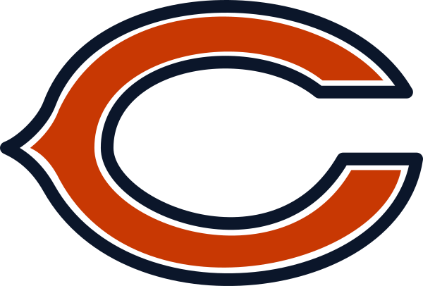

Favorite Sports Teams
A page about my favorite sports team
The Chicago Bears .

The Bears are one of the oldest teams in the NFL. They were founded in 1920 and were originally played as the Decatur Staleys.
Three facts about the Chicago Bears
- The Bears won Super Bowl XX and had a record of 15-1 in that season.
- The Bears have the most famous rivalry with the Green Bay Packers since 1921.
- The most famous bears player is running back Walter Payton nicknamed "Sweetness".
Built by Curtis Lorenz · BMIS 235